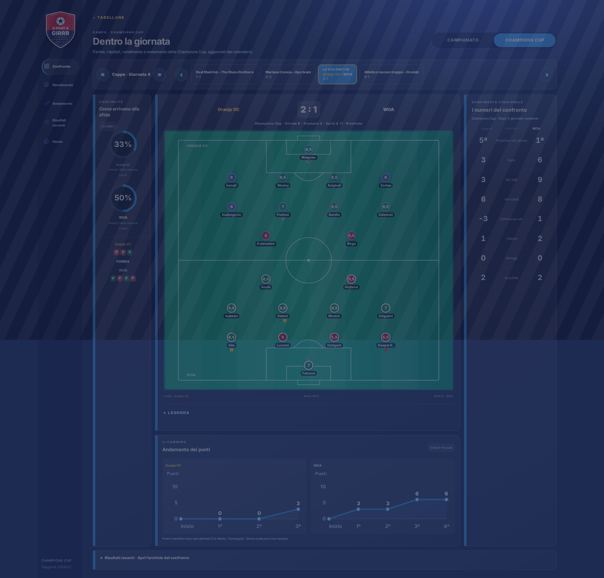
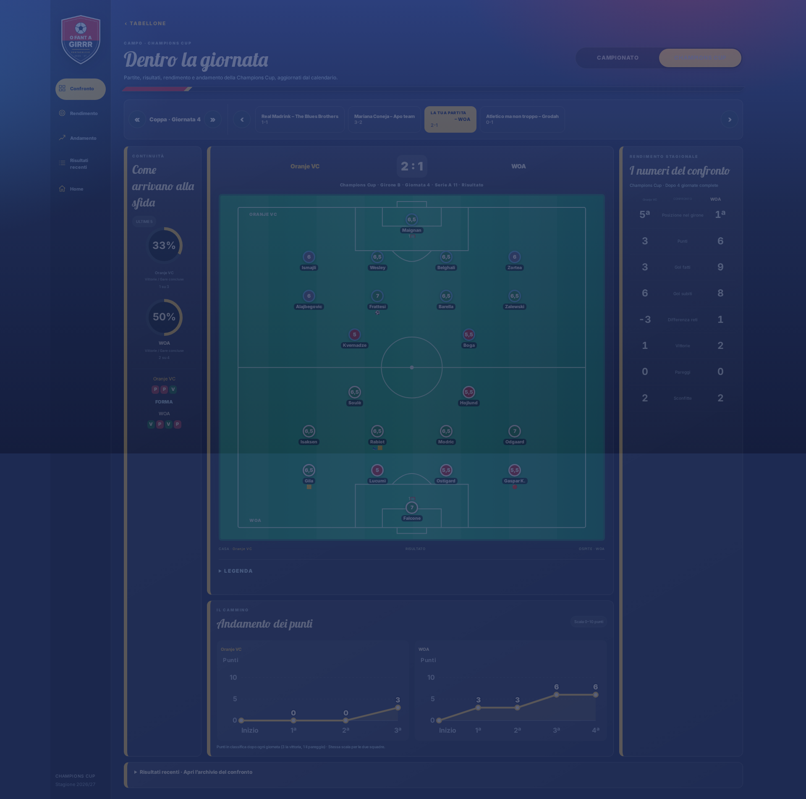
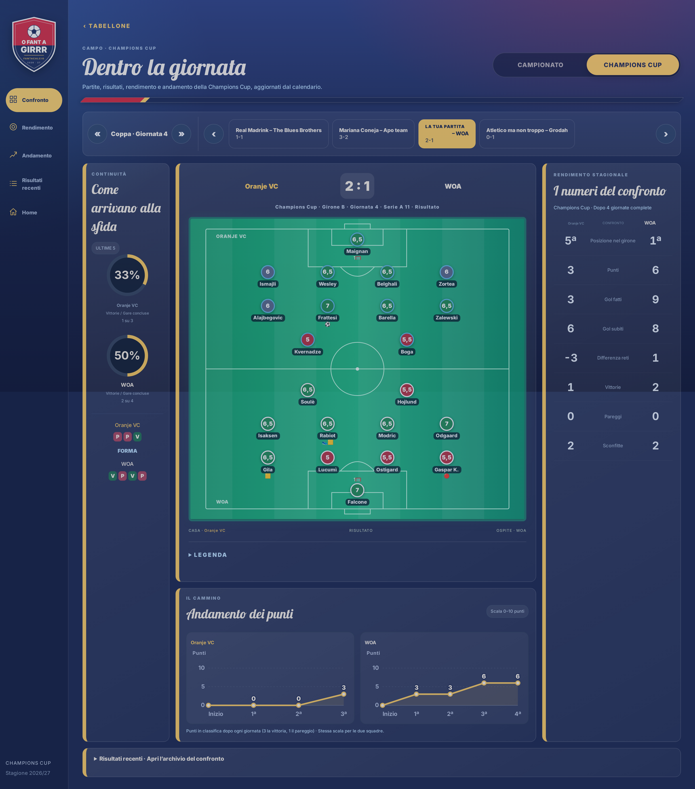

Entra nella prova integrata
Le pagine originali con le funzioni nuove. Nessuna delle impaginazioni rifiutate della PR #92.
Il Campo mostra anche la Champions Cup e conserva tutte le novità già provate da Claude. La 6.1.1 confluisce nella 6.2. Il Giornale mantiene le quattro pagine e la grafica originali.
Anteprima integrata nelle pagine originali; nessun voto arriva alla Lega. Il collaudo completo è documentato separatamente e il sito vero resta alla 6.1.
Le pagine originali con le funzioni nuove. Nessuna delle impaginazioni rifiutate della PR #92.
In alto l’interruttore Campionato / Champions Cup: l’indicatore scorre, le partite escono e rientrano in dissolvenza e nella Lega le bande sfumano da rosso ad azzurro; nello Stadio resta tutto oro. Ogni competizione ricorda la sua giornata e la sua partita. Con «Riduci movimento» il cambio è immediato.
‹ › per passare da una partita all’altra, « » per saltare alla giornata precedente o successiva. Le partite si possono anche scorrere e toccare. Ogni cambio scivola con una dissolvenza breve, su telefono e PC.
Nella Lega il cerchio dei giocatori della squadra di casa è rosso in Campionato e azzurro in Champions Cup; nello Stadio resta azzurro; l’ospite resta con il bordo bianco. Il migliore in campo ha cerchio oro e stella. Accanto al giocatore i simboli di bonus e malus: gol, rigore segnato o sbagliato, assist, rigore parato, porta inviolata, gol subiti, autogol, ammonizione 🟨 ed espulsione 🟥 (i cartellini sono già presenti nei dati ufficiali). La legenda si aggiorna da sola.
Chi entra con il codice della squadra vede aperta subito la sua partita, sia in Campionato sia in Coppa. Nella fila resta al suo posto, con il contorno oro e «La tua partita».
Nella grafica Stadio il Tabellone è oro anche in Champions Cup: interruttore, schede, giornate, bande delle partite, gironi e podio. Restano gli sfondi azzurrati e rosati.
«= Stessa posizione» con la maiuscola e «1 posizione» al singolare. I Padri Fondatori solo con il nome, tutti in fila.
Grafico della posizione leggibile per ogni giornata, testi migliorati, schede della Curva più rapide, «Campionato & Champions Cup» e frase «Peggiore» su una riga nel PC. Sono già certificate nel Lab; non saranno annunciate come versione separata.
Alternativa A: gli ultimi due risultati chiusi in Girrr Sport, con richiamo in Curva. Alternativa B: risultati raccolti nella Curva in un blocco chiuso. Le votazioni attive restano nella Curva. La prova confronta la collocazione, senza sostituire la grafica del sito.
Il Giornale conserva le quattro pagine originali: nel riquadro Curva potranno comparire una dichiarazione autentica e lo stato dell’MVP. La Radio conserva il copione e aggiunge solo una frase prima della chiusura. Nell’Albo i verdetti appaiono dopo la chiusura definitiva. Le prove dei PDF confrontano anche i parametri di impaginazione prima e dopo l’inserimento.
Tabellone · La tua partita in oro (foto prima e dopo)
Telefono 320 px · Lega · Telefono 320 px · Stadio
Prove con Chromium reale; schermi e identità dei dispositivi emulati. I risultati aggiornati dei tre motori sono nel rapporto dei collaudi, senza equiparare il cambio di identità alla prova di un browser diverso. Safari su iPhone, Samsung Internet e TV fisici restano da provare.Nuove acquisizioni dalle pagine native: MVP della 7ª con la scadenza già annunciata del 21 novembre alle 15 italiane. TV emulata a densità doppia.



Risultati e limiti dei collaudi · Messaggio e changelog completi da approvare